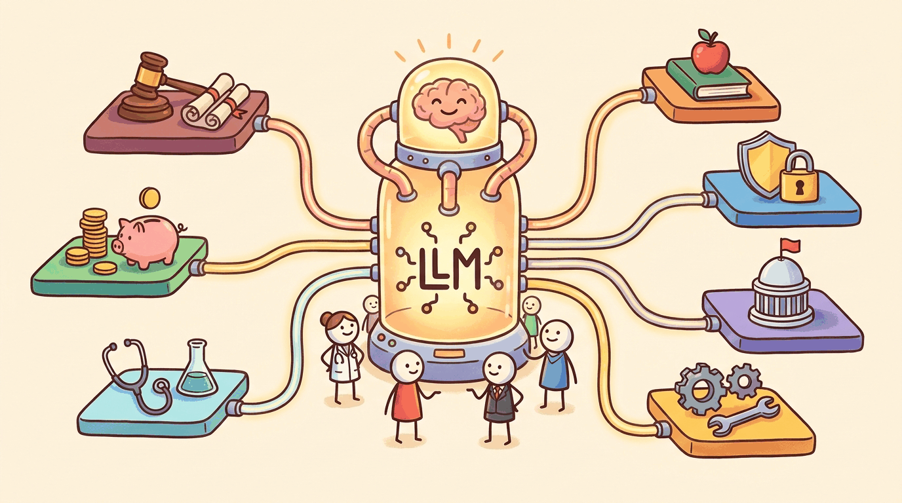

a Kurzgesagt-meets-XKCD visual metaphor with friendly characters and clear iconography, capturing the theme: Seven vertical applications of LLMs: how the same core techniques meet domain-specific ..."The future is already here, it's just not evenly distributed."
William Gibson
Part Overview
Part XI takes the techniques developed across the rest of the book (RAG, fine-tuning, agents, evaluation, safety) and applies them to nine industries with their own data shapes, compliance regimes, and risk profiles. Each chapter starts with what makes the vertical different, then walks through the production patterns that have proven out in the field, the regulatory landscape, and the failure modes specific to that domain.
These are not survey chapters. They are operating playbooks: which model class to start with, where retrieval helps and where it does not, what evaluation looks like under domain constraints, and which guardrails matter most when the cost of a wrong answer differs from a software bug. Read them in any order; each chapter stands alone.
The same LLM stack looks different in every industry. A legal contract review pipeline, a hospital triage assistant, and a manufacturing process-control copilot share infrastructure but diverge on data sensitivity, regulator expectations, and what counts as a "good enough" answer. This Part shows you how to make those translations: how to pick the right architecture for the domain, where to spend evaluation effort, and which industry-specific landmines to avoid before they reach production.
Contract review, statute and case-law retrieval, discovery, and drafting. How RAG, citation grounding, and confidence calibration play in a domain where hallucinated case names have real-world consequences.
Research-grade summarization, structured extraction from filings, trading signals, and customer-facing assistants in regulated banking. Risk frameworks, model audit, and the practical limits of LLMs around numeric reasoning.
Clinical note generation, patient triage, biomedical literature search, and drug discovery support. HIPAA-grade deployment patterns, hallucination mitigation in medical settings, and the line between decision support and diagnosis.
Tutoring systems, personalized curriculum generation, automated assessment, and instructor copilots. Pedagogical evaluation criteria, age-appropriate content gates, and the tension between scaffolding and answer-giving.
Threat-intelligence summarization, log triage, vulnerability discovery, and incident-response copilots. Defensive uses of LLMs, the offensive side of the same coin, and how to keep an LLM-powered SOC from amplifying false positives.
Constituent services, policy analysis, document processing, and intra-agency knowledge management. Procurement and audit constraints, FedRAMP-grade deployments, and the public-sector evaluation bar.
Process-control copilots, maintenance-log analysis, supply-chain optimization, and shop-floor operator assistance. Integrating LLMs with industrial sensor data, ERP, and safety-critical systems where uptime is the headline metric.
Music, video, design, and marketing copy: the multimodal generation playbook applied to creative work. Where the generative stack from Part VII actually ships in studios and agencies.
Ranking, retrieval, and personalization at scale, where LLMs sit alongside classical recommender systems instead of replacing them.
Per-industry vendors (Harvey, BloombergGPT, Med-PaLM, Khanmigo, Security Copilot) plus the regulator and benchmark catalogs you need to evaluate them.
What Comes Next
With seven verticals mapped, Part XII closes the book's main narrative on the frontier architectures, theory, and AGI trajectories that will reshape every application above. The Appendices and Capstone Project then provide the reference material and end-to-end build to take with you.